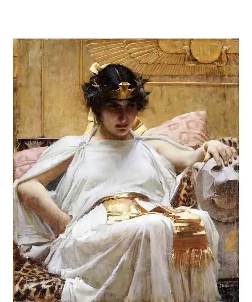

1. Cleopatra VII (69-30 BC)

Queen of Egypt | Last Pharaoh | Member of the Ptolemaic Kingdom
Background
Cleopatra VII Thea Philopator was Queen of the Ptolemaic Kingdom
of Egypt from 51 to 30 BC, and the last active Hellenistic pharaoh.
A member of the Ptolemaic dynasty, she was a descendant of its founder Ptolemy I Soter,
a Macedonian Greek general and companion of Alexander the Great.
Her first language was Koine Greek, and she is the only Ptolemaic ruler known to have learned the Egyptian language,
among several others. After her death, Egypt became a province of the Roman Empire, marking the end of the Hellenistic period in the Mediterranean,
which had begun during the reign of Alexander (336–323 BC).
Origin
Cleopatra, born in Alexandria as the daughter of Ptolemy XII,
became ruler of Egypt in 51 BC alongside her brother Ptolemy XIII. Their conflict led to civil war. After Pompey fled to Egypt and was killed, Julius Caesar arrived,
supported Cleopatra, and ended the siege against them. Ptolemy XIII died soon after, and Caesar made Cleopatra and her younger brother Ptolemy XIV joint rulers. Cleopatra
became Caesar’s lover and had a son, Caesarion. She later traveled to Rome until Caesar’s assassination. After Ptolemy XIV’s death, she made Caesarion co-ruler. Cleopatra
then formed a political and romantic alliance with Mark Antony, having three children with him. Antony relied heavily on her support during his military campaigns. Their
growing power angered Octavian, who declared war on Cleopatra. After losing the Battle of Actium and the invasion of Egypt, Antony killed himself, and Cleopatra took her
own life to avoid humiliation by Octavian. Her legacy lived on through ancient writings and extensive artistic portrayals in Roman, Medieval, Renaissance, and modern culture,
making her a lasting icon of history and popular culture.
Early Childhood
Cleopatra VII was born in early 69 BC to the ruling Ptolemaic pharaoh Ptolemy XII and an uncertain mother,presumably Ptolemy XII's wife Cleopatra V
Tryphaena (who may have been the same person as Cleopatra VI Tryphaena),the mother of Cleopatra's older sister, Berenice IV Epiphaneia.
Cleopatra Tryphaena disappears from official records a few months after the birth of Cleopatra in 69 BC.The three younger children of Ptolemy XII, Cleopatra's
sister Arsinoe IV and brothers Ptolemy XIII Theos Philopator and Ptolemy XIV Philopator, were born in the absence of his wife. Cleopatra's childhood
tutor was Philostratos, from whom she learned the Greek arts of oration and philosophy. During her youth Cleopatra presumably studied at the Musaeum, including the Library of Alexandria.
Reign
Ptolemy XII died before 22 March 51 BC, and Cleopatra began her reign by traveling to Hermonthis to install a sacred Buchis bull. She faced famine from drought, low Nile floods, lawless
Gabiniani soldiers, and inherited debts of 17.5 million drachmas to Rome. In 50 BC, two sons of Marcus Bibulus were killed by the Gabiniani, possibly with help from rogue court officials.
Cleopatra sent the culprits to Bibulus, who returned them and criticized her for interfering. By 29 August 51 BC, Cleopatra was listed as sole ruler, likely having married her brother Ptolemy XIII,
following Ptolemaic sibling marriage traditions. Despite her rejection of him, Ptolemy XIII retained powerful allies, including the eunuch Potheinos, military commander Achillas, and tutor Theodotus of Chios.
Cleopatra briefly tried to ally with Ptolemy XIV, but by 50 BC, Ptolemy XIII gained the upper hand, asserting dominance in official documents by 49 BC.
Final Years / Legacy
After the defeat of her forces alongside Mark Antony by Octavian in 31 BC, Cleopatra committed suicide in 30 BC in Alexandria, traditionally believed to be by the bite of an asp.
Her death marked the end of the Ptolemaic dynasty and the Hellenistic era in Egypt, as the country became a Roman province. Cleopatra is remembered as one of history’s
most influential female rulers, renowned for her intelligence, leadership, and impact on both Egyptian and Roman history.
2. Julius Caesar (100–44 BCE)

A Roman general and statesman who expanded the Roman Republic through military conquest.
Background
Gaius Julius Caesar was a Roman general, statesman, and member of the First Triumvirate with Crassus and Pompey. He led the Roman armies in the Gallic Wars,
extending Rome’s territory, and famously crossed the Rubicon in 49 BC, starting a civil war that left him in near-total power.
As dictator, Caesar carried out reforms, including creating the Julian calendar, settling veterans in colonies, expanding the Senate,
and granting citizenship to parts of Italy and Spain. In 44 BC, he was declared “dictator for life,” but was assassinated on the Ides of March by senators fearing his power.
Caesar was also an accomplished writer and historian. His name became synonymous with “emperor,” inspiring titles like Kaiser and Tsar, and he remains one of history’s most famous military commanders.
Origin
Julius Caesar (100 BC) was born into the patrician Julii family, which claimed descent from Julus, son of Aeneas, linking them to the goddess Venus.
Despite their noble ancestry, the family was not very politically influential during the middle Roman Republic.
Caesar’s father, also named Gaius Julius Caesar, had moderate political success and married Aurelia Cotta, producing Caesar and two daughters. Caesar’s family connections, including his sister’s marriage to the powerful general Gaius Marius,
helped him gain early political opportunities, including service on a land commission and as praetor, and governor of Asia
Life under Sulla and military service
During the dominance of Lucius Cornelius Cinna, Caesar’s father retired from politics. Young Caesar was appointed flamen Dialis (priest of Jupiter),
which could have prevented a political career, and married Cinna’s daughter, Cornelia. After his father’s sudden death in 84 BC, Caesar defied Sulla,
who had ordered him to divorce Cornelia and resign his priesthood. Caesar went into hiding but ultimately kept his wife by resigning the priesthood.
Caesar then served abroad in Asia under governors Marcus Minucius Thermus and Publius Servilius Vatia, collecting naval forces in Bithynia and winning the civic crown at the Siege of
Mytilene for saving a citizen’s life. After Sulla’s death in 78 BC, Caesar returned to Rome, unsuccessfully prosecuting some Sullan aristocrats. He then went to Rhodes to study rhetoric under Apollonius Molon.
On the way, he was captured by pirates, ransomed, and later returned with a fleet to punish them. His studies were interrupted by the Third Mithridatic War, where he reportedly raised troops and fought successfully.
Entrance into politics
In 73 BC, Caesar was co-opted into the pontifices, marking him as a respected member of the aristocracy.
He returned to Rome and was elected military
tribune in 71 BC, advocating for the restoration of plebeian rights and pardons for Lepidus’ supporters.
In 69 BC, Caesar became quaestor in Hispania Ulterior, earning a lifetime seat in the Senate.
Shortly before leaving, his aunt Julia and his wife Cornelia died; he gave public eulogies for both.
Caesar then remarried Pompeia, Sulla’s granddaughter, aligning with political norms of reconciliation.
Final Years / Legacy
On March 15, 44 BC, known as the Ides of March, Julius Caesar was assassinated by a group of senators,
including Brutus and Cassius, who feared his growing power. Despite his death, Caesar’s influence endured through
his adopted heir Octavian (Augustus), who became the first Roman Emperor.
Caesar is remembered as one of history’s greatest military commanders and a pivotal figure in Roman history,
whose reforms and conquests left a lasting legacy.
3. Alexander the Great (July 356 BC – June 10, 323 BC)

Alexander III of Macedon, commonly known as Alexander the Great (July 356 BC – June 10, 323 BC), was a Macedonian king, military commander,
and one of history’s most successful conquerors. He created one of the largest empires of the ancient world, stretching from Greece to Egypt and as far east as India. Alexander is renowned for his military strategies,
leadership skills, and the spread of Greek culture, which had a lasting influence on the ancient world and beyond.
Early Life
Alexander was born in Pella, the ancient capital of Macedonia, in 356 BC, the son of King Philip II of Macedon and Queen Olympias.
His father was a powerful ruler and military strategist who united most of the Greek city-states under Macedonian rule,
while his mother instilled in him a sense of ambition and divine destiny, claiming descent from the Greek hero Achilles.
From a young age, Alexander was highly educated. He was tutored by Aristotle, one of the greatest philosophers of the time,
who taught him subjects including philosophy, science, medicine, and literature. Under Aristotle’s guidance, Alexander developed a love of learning, a strategic mind,
and an appreciation for Greek culture, which he would later spread throughout his empire. He showed early signs of military skill and leadership, reportedly taming a
horse named Bucephalus at the age of twelve, an act that impressed his father and symbolized his extraordinary courage and intelligence.
Major Contributions / Career
Alexander ascended to the throne of Macedonia in 336 BC, following the assassination of his father, King Philip II. Almost immediately,
he faced revolts and threats both within and outside Macedonia, which he swiftly subdued using both diplomacy and military action.
Alexander’s most famous achievements are his military conquests. Between 334 BC and 323 BC, he led a campaign against the Persian Empire,
defeating King Darius III in multiple decisive battles, including the Battle of Issus (333 BC) and the Battle of Gaugamela (331 BC).
Through these victories, he conquered Asia Minor, Egypt, Mesopotamia, Persia, and parts of Central Asia, creating an empire that spanned over 2 million square miles.
He also founded over 20 cities, many named Alexandria, which became centers of Greek culture, commerce, and learning. In Egypt, he was declared pharaoh,
and he founded the city of Alexandria, which became a major hub of knowledge and culture in the ancient world. Alexander encouraged the integration of Greek
and local cultures, promoting intermarriage and spreading Hellenistic art, architecture, and ideas across his territories.
Military Genius and Leadership
Alexander the Great is celebrated for his brilliant military tactics and leadership. He combined speed, flexibility, and surprise in battle,
often outmaneuvering much larger armies. He was personally involved in battles, inspiring loyalty and courage among his troops.
His ability to adapt to different terrains and opponents, whether in the mountains of Afghanistan or the deserts of Persia, contributed to his undefeated record in battle.
Beyond the battlefield, Alexander also showed strategic political insight. He often respected local customs and rulers,
appointing them as governors under his authority, which helped stabilize his vast empire. His vision extended beyond mere conquest;
he sought to unite the known world under a common culture while maintaining respect for diversity.
Final Years / Legacy
Alexander’s empire began to unravel after his untimely death in 323 BC in Babylon, at the age of 32, likely due to fever, malaria, or poisoning (the exact cause remains uncertain).
Despite his early death, his campaigns permanently altered the course of history. The regions he conquered entered the Hellenistic period, a time when Greek culture, language, and governance influenced Egypt, Persia, and India for centuries.
Alexander’s legacy is profound: he is remembered not only as one of the greatest military leaders of all time but also as a cultural unifier whose influence extended beyond warfare.
Cities he founded became centers of learning and commerce, and his strategies are still studied in military academies today. His ambition, intellect, and vision have made him a symbol of conquest, leadership, and the spread of civilization.
4. Socrates (470/469 BC – 399 BC)

Socrates (470/469 BC – 399 BC) was a classical Greek philosopher widely regarded as one of the founders of Western philosophy. He is known for his profound influence on ethics, logic, and epistemology,
as well as for his unique method of questioning that encouraged critical thinking and dialogue. Socrates’ teachings laid the foundation for the development of philosophy
in the Western world, despite leaving no written works of his own.
Early Life
Socrates was born in Athens, Greece, around 470/469 BC, to Sophroniscus, a stonemason, and Phaenarete, a midwife. He grew up in a modest household, receiving a basic education in reading, writing,
and arithmetic, but he was largely self-taught in philosophy. From an early age, Socrates exhibited a keen interest in human behavior, morality, and the nature of knowledge.
During his youth, Socrates also served as a soldier in the Athenian army, demonstrating courage and discipline in several battles, including the Battle of Potidaea,
the Battle of Delium, and the Battle of Amphipolis. His experiences in the military and in Athens’ political life deeply influenced his understanding of ethics, justice, and leadership, which later became central themes in his philosophical inquiries.
Major Contributions / Career
Socrates did not write books or formal treatises; instead, he taught through dialogue and questioning, known today as the Socratic Method. This method involved asking probing questions to stimulate critical thinking, reveal contradictions,
and encourage individuals to examine their own beliefs. Through this approach, Socrates challenged conventional wisdom and inspired his students to seek truth and virtue above material wealth or social status.
He spent much of his life walking the streets and marketplaces of Athens, engaging citizens, politicians, and fellow philosophers in discussions about ethics, justice, and the good life.
Socrates emphasized moral philosophy, arguing that the unexamined life is not worth living and that true knowledge comes from recognizing one’s own ignorance.
Many of the ideas and teachings of Socrates are known today through the writings of his students, most notably Plato. Plato’s dialogues, such as The Apology,
Crito, and Phaedo, preserve Socratic philosophy and portray Socrates as a model of ethical inquiry, intellectual integrity, and civic responsibility.
Philosophical Methods and Beliefs
Socrates focused on ethics, virtue, and human knowledge. He believed that moral excellence was more important than wealth or power and that individuals should strive to live virtuous lives guided by reason and self-reflection.
The Socratic Method remains one of his most significant contributions. By asking systematic questions, Socrates encouraged his students to think critically, recognize assumptions, and arrive at their own conclusions.
His approach has influenced countless philosophers and educators throughout history, forming the basis of modern critical thinking and pedagogy.
Socrates also questioned the authority of the Athenian government and the popular beliefs of his time, which eventually led to tension with political leaders and citizens who viewed him as a threat to traditional values.
Final Years / Legacy
In 399 BC, Socrates was tried and convicted in Athens on charges of corrupting the youth and impiety. He was sentenced to death and executed by drinking hemlock. Despite his death,
Socrates’ influence continued to grow through the works of his students, particularly Plato and Xenophon.
Socrates’ legacy is immense: he is remembered as a symbol of intellectual courage, moral integrity, and the pursuit of truth.
His methods shaped Western philosophy, education, and the way humans approach questions of ethics, justice, and knowledge. Socratic questioning remains a cornerstone of philosophical discourse and critical thinking to this day.
5. Confucius (551 BC – 479 BC)

Confucius (551 BC – 479 BC), also known as Kong Fuzi or Kongzi, was a Chinese philosopher, teacher, and political thinker whose ideas have profoundly influenced Chinese culture,
government, and society for over two millennia. He is best known for developing a system of ethics, social philosophy, and moral
guidance that emphasized virtue, respect, and proper conduct, forming the foundation of Confucianism.
Early Life
Confucius was born in Qufu, in the state of Lu (modern-day Shandong Province, China), in 551 BC, during a period of political fragmentation and moral decline known as the Spring and Autumn period.
His father, Kong He, died when Confucius was very young, leaving his family in modest circumstances. Despite these hardships, he displayed intelligence, curiosity, and a strong sense of moral responsibility from an early age.
Confucius devoted himself to learning, studying ancient texts, rituals, history, and poetry. He sought to understand proper conduct,
justice, and the principles that could restore harmony to society. His dedication to education and self-improvement became a central theme throughout his life, influencing the generations of scholars who followed.
Major Contributions / Career
Confucius spent much of his life teaching and advising rulers, seeking to promote ethical governance and social harmony. He believed that a society governed by virtue, moral leadership, and
respect for tradition would thrive, whereas corruption and selfish ambition would lead to disorder.
He established a school where he taught a broad curriculum, including ethics, history, music, and government, welcoming students
regardless of social class. This was revolutionary at the time, as education was largely restricted to the elite. Confucius emphasized ren (benevolence or humaneness),
li (ritual propriety), and yi (righteousness) as core principles guiding personal behavior and governance.
Philosophical Teachings
Confucius’ philosophy focuses on ethical behavior, family loyalty, and social harmony. He advocated for:
Respecting elders and ancestors through proper conduct and filial piety.
Leading by example rather than coercion, believing that virtuous rulers inspire virtue in others.
Continuous self-improvement through study, reflection, and moral discipline.
Justice and fairness in personal and political life.
His teachings were compiled by his disciples after his death in works such as the Analects (Lunyu),
which remain central texts in Chinese education, philosophy, and governance.
Final Years / Legacy
Confucius spent his later years continuing to teach and advise leaders, though his ideas were not widely adopted during his lifetime. He died in 479 BC at the age of 72 in his hometown of Qufu.
Despite limited recognition while alive, Confucius’ influence grew over centuries, shaping Chinese society, law, and education.
Confucianism became the dominant moral and philosophical framework in China, influencing government bureaucracy, social conduct,
and cultural values. His teachings also spread to Korea, Japan, and Vietnam, leaving a lasting legacy in East Asian civilization. Confucius is remembered as a pioneer of ethical philosophy and a guiding force in human moral thought.